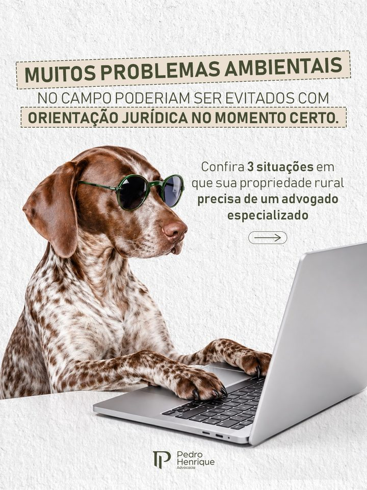
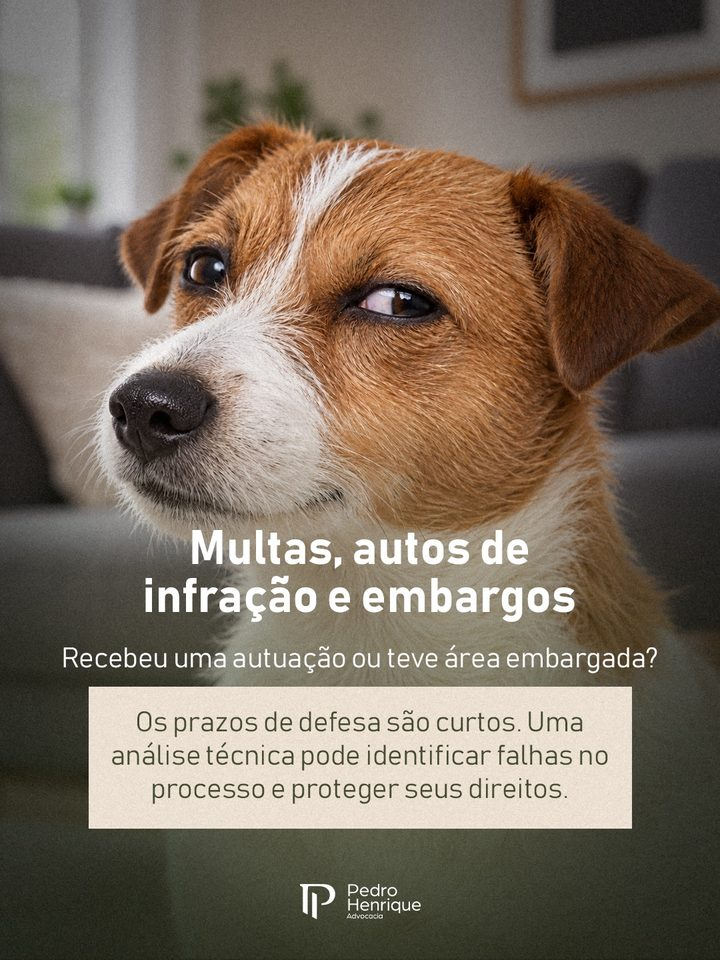
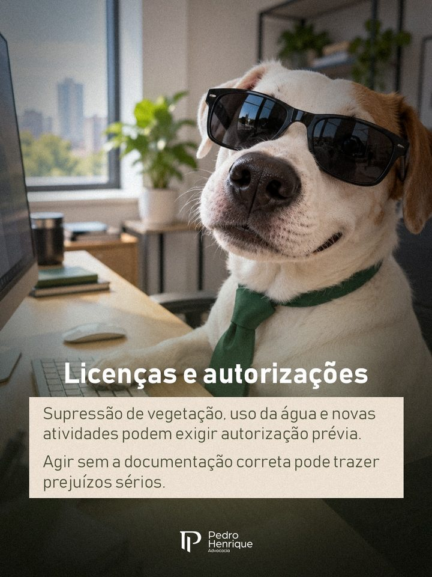
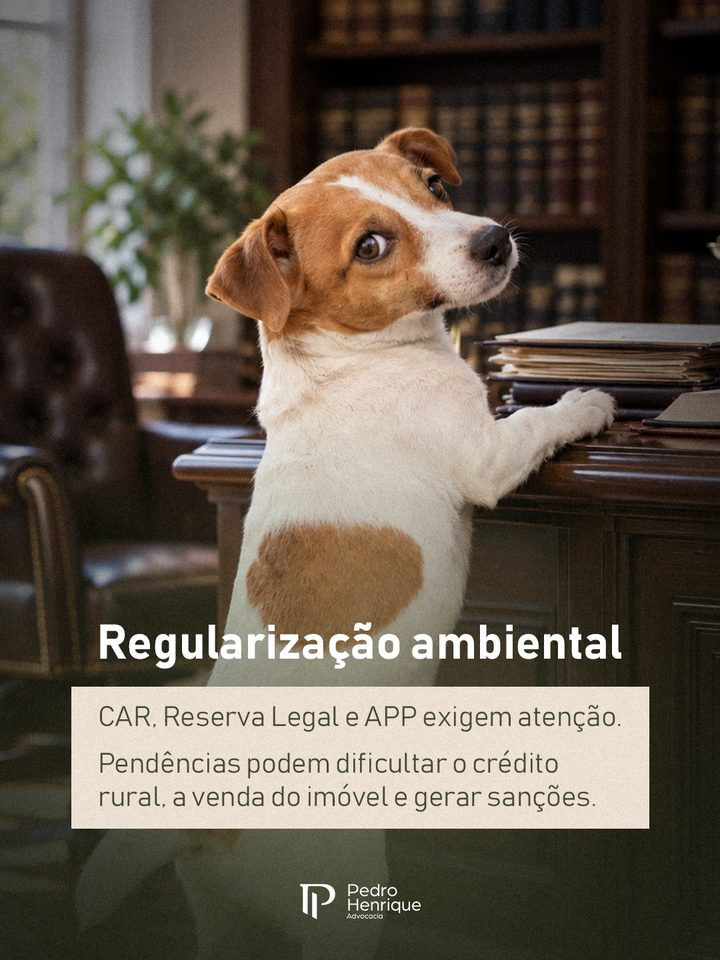
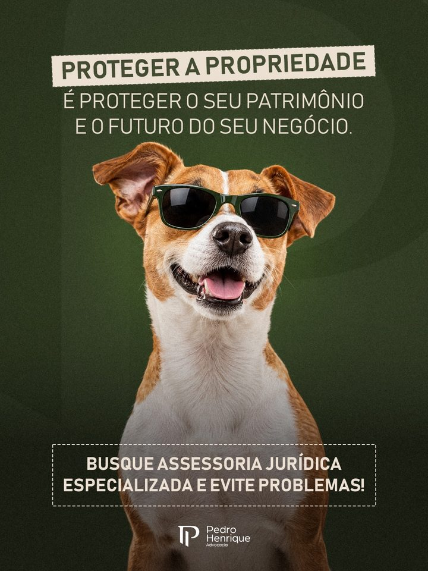

PL 2564/2025
Embargo ambiental remoto, por satélite
O projeto de lei discute o embargo feito à distância pelo IBAMA, a partir de imagens de satélite. O tema foi levantado em post do perfil em 28/10.

Toque na semente para plantar
Responda em poucos toques. A conversa chega organizada no WhatsApp do Pedro.
Triagem para organizar o contato. Não é consulta, não promete resultado e não substitui orientação jurídica.
Duas fazendas vizinhas. Arraste para comparar.
Em um post do perfil, fazendas vizinhas chegaram a 40% de diferença no valor por hectare. Cada caso depende de análise.
Conferir a minha propriedadeConversa sobre regularizaçãoGire o terreno e toque nos objetos.
PL 2564/2025
Embargo ambiental remoto, por satélite
O projeto de lei discute o embargo feito à distância pelo IBAMA, a partir de imagens de satélite. O tema foi levantado em post do perfil em 28/10.
Poder público
Omissão na fiscalização ambiental
Decisão do TJ-SP sobre responsabilização do poder público por omissão, comentada no perfil em 18/11.
Gire com o dedo. Situações em que a propriedade rural precisa de orientação.





Conteúdo informativo, não substitui consulta jurídica.
Conteúdo informativo. Não promete resultado e não substitui consulta jurídica.